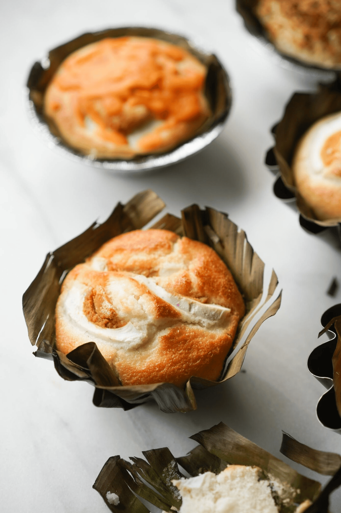

Bibingka Recipe

Bibingka is a type of rice cake native to the Philippines. It goes without saying that we Filipinos love rice. We have it with almost every meal, and dessert is no exception. This is why kakanin has become such a popular Filipino merienda. A combination of the words kanin (rice) and kain (eat), kakanin refers to a group of glutinous rice cakes Filipinos know and love..
Ingredients
- 1 cup rice flour
- 1/8 teaspoon salt
- 2 1/2 teaspoon baking powder
- 3 tablespoons butter
- 1/2 cup granulated sugar
- 1 cup coconut milk
- 1/4 cup fresh milk
- 1 piece salted duck egg sliced
- 1/2 cup grated cheese
- 3 pieces raw eggs
- 1/4 cup grated coconut
- Pre-cut banana leaf
Directions
- Preheat oven to 375 degrees Fahrenheit.
- Combine rice flour, baking powder, and salt then mix well. Set aside.
- Cream butter then gradually put-in sugar while whisking.
- Add the eggs then whisk until every ingredient is well incorporated then Gradually add the rice flour, salt, and baking powder mixture then continue mixing then Pour-in coconut milk and fresh milk then whisk some more for 1 to 2 minutes.
- Arrange the pre-cut banana leaf on a cake pan or baking pan.
- Pour the mixture on the pan and Bake for 15 minutes then Remove from the oven then top with sliced salted egg and grated cheese (do not turn the oven off) then Put back in the oven and bake for 15 to 20 minutes or until the color of the top turn medium brown.
- Remove from the oven and let cool.
- Brush with butter and top with grated coconut, then server, share and enjoy!
Back to Main Page